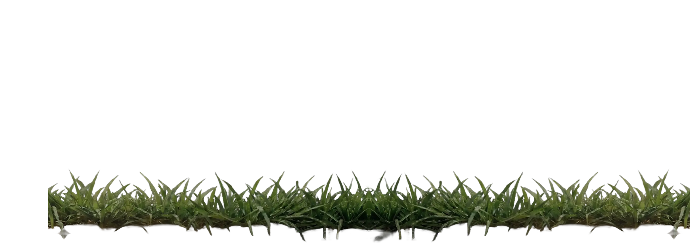
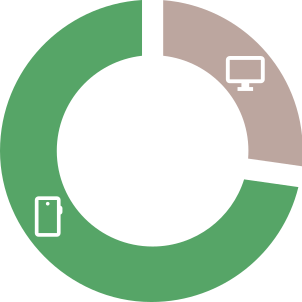
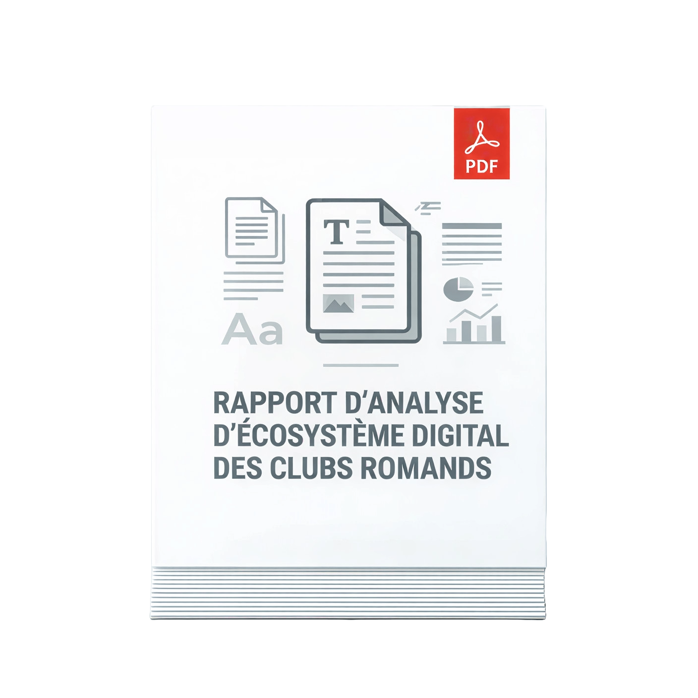

La plupart des clubs romands sont absents du terrain digital
Creusons aux racines du problème
Découvrez un audit en profondeur du digital des clubs romands pour atteindre le noyau de leurs difficultés.

Découvrez un audit en profondeur du digital des clubs romands pour atteindre le noyau de leurs difficultés.

7 supporters sur 10 consultent votre site sur smartphone, mais la lenteur technique de vos pages pourrait leur faire abandonner la navigation en moins de 3 secondes.

De nombreux clubs gèrent encore leur boutique ou leur billetterie via des formulaires manuels, des bons de commande PDF ou WhatsApp. Cette absence de solutions de paiement intégrées crée une barrière à l'achat immédiat.
Si les clubs sont facilement trouvables par leur nom précis, ils disparaissent des résultats Google dès que la recherche devient plus large.
Recevez gratuitement le rapport d'analyse approfondie et découvrez des recommandations concrètes pour améliorer la présence digitale de votre club.

Audience inactive
La diffusion uniforme des contenus sur tous les réseaux dilue l’attention. Les réseaux sociaux, utilisés comme des canaux de duplication, ne répondent pas aux attentes de leur audience qui finit par se désintéresser.